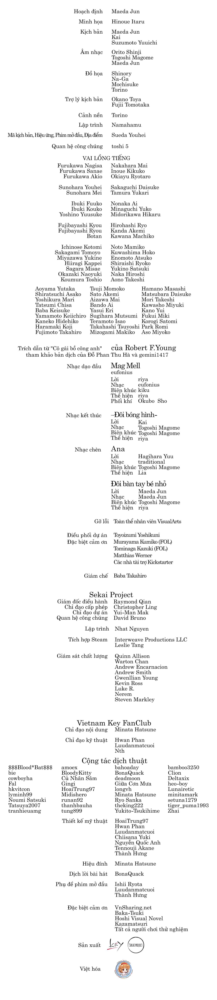
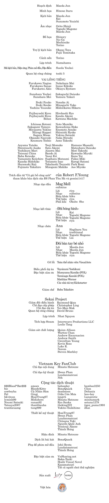
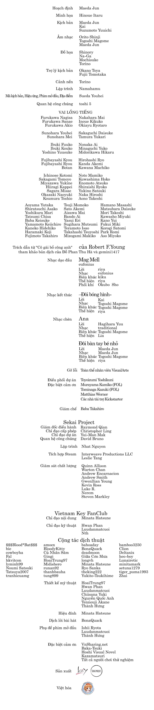

Okazaki Tomoya, một nam sinh cấp ba lãnh đạm, bất cần, chán ghét mọi
thứ, không thể tìm thấy niềm vui ở bất kỳ nơi đâu, trải qua những tháng
ngày tẻ nhạt nhuốm màu xám xịt cùng một tương lai vô định. Những tưởng
cả cuộc đời chẳng thể nào tìm ra lẽ sống, thì một ngày kia, anh hạnh ngộ
cùng một cô gái đã thốt lên những lời lẽ thơ ngây nhất thế gian.
Lần đầu tiên Tomoya thực lòng quan tâm đến một người, và cuộc sống của
anh bước sang một chương mới, vừa khấp khởi vừa âu lo, xen lẫn những tâm
tình và bao nỗi niềm trăn trở. Một câu chuyện tình xuyên suốt đời người
thấm đẫm nước mắt song cũng tràn ngập tiếng cười hạnh phúc, chan chứa
giá trị nhân văn cao cả.
"Chúng ta yêu thương thị trấn, và nó nuôi dưỡng chúng ta thành người.
Thị trấn, con người... là một gia đình."
CLANNAD là khúc ca xuân, in dấu những tháng năm sống và phấn
đấu hết mình vì tình bạn, tình yêu, tình thương nơi chôn nhau cắt rốn...
tất cả được kể lại qua hình thái chân thực của tình gia đình, vốn quý
giá nhất của mỗi con người.
Visual novel thứ ba của Key, ra đời vào năm 2004, cũng là một trong
những tác phẩm gây xúc động mãnh liệt nhất của công ty, đưa tên tuổi của
nhà văn Maeda Jun vào hàng ngũ biên kịch gia visual novel lỗi lạc. Tác
phẩm đã được chuyển thể thành nhiều loại hình truyền thông, trong đó
tiêu biểu là xê-ri anime do Kyoto Animation sản xuất vào năm 2007 và
2008, luôn nằm trong tốp những bộ anime lấy nhiều nước mắt của người xem
nhất.
CLANNAD gồm hai phần là School Life (cuộc sống học đường) và
After Story (hậu truyện). "After Story" chỉ được mở khóa khi người chơi
đã hoàn thành toàn bộ kịch bản có sẵn, và là phần chủ đạo làm nên sự
thành công của CLANNAD.
~ Danh đề ~

~ Tải về ~
Lưu ý quan trọng:
Đây chỉ là patch Việt hóa. Bạn cần cài đặt thành công trò chơi trước
khi khởi chạy patch này. Tải về và cài đặt trò chơi từ kênh phân
phối chính thức Steam tại
store.steampowered.com/app/324160/.
Patch này chỉ dành cho CLANNAD HD Edition phiên bản
v1.6.7.3 trở lên, không thể áp dụng cho các bản phát hành khác hoặc
phiên bản cũ hơn.
Sau khi tải về, chỉ cần cài vào đúng thư mục chứa game là có thể
khởi chạy.
Nếu gặp vấn đề hiển thị phông chữ, xin hãy đảm bảo bạn đang dùng
phông Noto Mono EX. Kiểm tra bằng cách vào Cấu hình >> Chọn kiểu
chữ.
Nếu có lỗi phát sinh hoặc thắc mắc về quá trình cài đặt patch, hãy
duyệt qua
các phương thức liên lạc
với Vietnam Key FanClub. Hãy đảm bảo bạn đã cài đặt phiên bản patch
mới nhất cung cấp tại trang này trước khi báo lỗi.
Thấm thoát mà đã 12 năm từ ngày dự án này khởi động. 12 năm là cả một
chặng đường dài tưởng như rất vô lý với một dự án dịch thuật, dù hoàn
toàn phi lợi nhuận chăng nữa. Có vô số lý do khiến cho dự án Việt hóa
này phải trì hoãn lâu như vậy, chủ quan có mà khách quan cũng nhiều, chỉ
xin được liệt kê một số ra đây để bạn đọc hiểu thêm về quá trình bản
dịch này đến với người hâm mộ.
Đầu tiên, dự án từng luôn bị thiếu một trong ba yếu tố "thiên thời, địa
lợi, nhân hòa". Luôn có một khía cạnh phát sinh vấn đề khi các khía cạnh
còn lại hoạt động trơn tru. Đây có lẽ là một kiểu "lời nguyền" về mặt
tâm linh, nhưng đến cuối cùng lòng quyết tâm cũng đã chiến thắng lời
nguyền này, đưa bản dịch đến tay bạn đọc.
Thứ hai, quá trình hiệu đính gặp phải muôn vàn khó khăn, do chất lượng
bản dịch thô không đáp ứng các tiêu chuẩn cơ bản. Đây là điều khó tránh
khỏi với một dự án tự nguyện quá đồ sộ. Một vấn đề quan trọng khác đó
là, bản dịch thô tiếng Việt vốn được dịch lại từ một bản dịch tiếng Anh
do người hâm mộ thực hiện, và sai lệch rất nhiều về ngữ nghĩa so với
nguyên tác tiếng Nhật. Đến cuối cùng, bản dịch mà bạn đọc đang thưởng
thức đây đã thay đổi tầm 70-80% so với bản dịch thô ban đầu, trên cơ sở
bám sát bản gốc tiếng Nhật, âu cũng là điều may mắn.
Thứ ba và quan trọng nhất, dự án này gặp trở ngại rất lớn về mặt kỹ
thuật. Các lời bình của những đồng sự bên dưới sẽ giải thích kỹ càng
hơn, song từ trải nghiệm của chính tôi, đã có thời điểm dự án này rơi
vào bế tắc và gần như không thể tiếp tục tiến lên được vì các rào cản kỹ
thuật. Game engine của tác phẩm này đã quá cũ và không còn được hỗ trợ
phát triển. Đã có lúc chúng tôi phải vẽ tay từng ký tự dấu thanh tiếng
Việt vì đơn giản là không có cách nào để game hiển thị ngôn ngữ này đúng
cách. Hãy hình dung sự tuyệt vọng của đội ngũ Việt hóa khi đó, nhưng nhờ
trời, dự án đã về đích thành công.
Nguyên nhân chính khác xuất phát từ hoàn cảnh cuộc sống của tôi, trưởng
nhóm thực hiện dự án, cũng "góp phần" không nhỏ khiến dự án bị trì hoãn.
Có điều trong cái rủi có cái may, vì tôi e ngại rằng nếu thực hiện hiệu
đính sớm hơn, năng lực ngôn ngữ hạn hẹp của tôi lúc bấy giờ sẽ không đủ
sức truyền tải một tác phẩm có nhiều lối diễn đạt hoa mỹ như vậy.
Tôi không biết phải nói lời cảm ơn thế nào cho thỏa với những người bạn
đã sát cánh cùng tôi đi đến hết chặng đường này, đặc biệt là các nhân sự
chỉ đạo kỹ thuật như Luudanmatcuoi hay Nth, vì nếu vắng họ, dự án chắc
chắn đã bị bỏ ngang không có hồi kết. CLANNAD là chấp niệm lớn
nhất trong đời tôi, và như cách nhà văn Maeda Jun bày tỏ, đây có lẽ là
bức tường mà tôi không thể nào vượt qua lần thứ hai. Xin dành hết thảy
sự cảm tạ với từng cá nhân đóng góp vào quá trình đưa bản dịch này đến
công chúng, từ những cộng tác viên dịch thuật đến những người chơi thử
nghiệm.
CLANNAD là một tác phẩm đẹp, nhưng như một quy luật bất biến,
không có thứ gì là hoàn hảo. Hãy thưởng thức tác phẩm này với tâm thế
bao dung để đón nhận những giá trị sống tích cực mà nó mang lại, và có
cái nhìn lạc quan hơn cho đời. Cũng cầu xin một sự rộng lượng từ bạn đọc
nếu đó đây vẫn còn rải rác những lỗi chính tả hay diễn đạt, vì sức người
có hạn, bất luận chúng tôi có tha thiết và quyết tâm mang đến công chúng
một bản dịch có tâm và có tầm thế nào chăng nữa.
Thật tự hào vì là một Kagikko (người hâm mộ Key), và tôi sẽ luôn sống
với tâm niệm như vậy cho đến cuối chuyến hành trình của đời mình. Hẹn
gặp lại các bạn ở những dự án dịch thuật tiếp theo, nếu ta hữu duyên.
Minata Hatsune, 2021
***
Eto... khi hoàn thành mọi việc rồi thì nhìn lại cũng không thấy khó khăn
lắm, có lẽ với tôi chỉ là kỉ niệm đẹp, một dấu mốc? Tôi không phải là
người tham gia dự án những ngày đầu, thậm chí đến với dự án ở giai đoạn
cuối của cuối để... ăn hôi thêm vào credit :))) Ngày đầu tiên vào dự án
là 2 năm trước, tôi rất ngỡ ngàng: project thọ hơn cả kiến thức của tôi
về thế giới lại đi cần tôi. Lúc đó, tôi cũng rất băn khoăn lưỡng lự, vì
tự học tất cả từ code python, dựng web chay bằng html, css, js,
Photoshop, After Effect, nhưng tất cả đều ở mức căn bản, tôi chưa từng
cộng tác hay làm bất cứ dự án nào ra trò cả. Chẳng biết mình vào có góp
được gì không hay chỉ phá bĩnh thôi.
Trong lúc làm tôi hiểu ra tại sao dự án này dài đến vô lý, mà dài thế
vẫn chưa ngỏm mới lạ. Ngoài cách giải thích của leader ra thì cái game
này kiểu bị nghiệp ấy, game drama mà gây drama nhiều dã man. Nghiệp cả
tài liệu nước ngoài, nhân sự làm, tay nghề các staff, và cuộc sống các
staff: cứ ai ổn rồi thì có biến, người khác sắp tèo. Sau 4444 ngày miệt
mài dịch, chỉnh sửa, hiệu đính, nghiên cứu patch, với sự cộng tác của 44
con người, 44 số phận đưa đẩy, 44 tài năng khác nhau, cuối cùng chúng
tôi cũng hoàn thành hành trình, thực hiện tâm nguyện của mọi người. Bản
thân tôi thuộc đội ngũ dev nhưng không biết tý gì về cách hoạt động của
game, tôi chỉ tự mày mò code python đơn giản, chuyên ngành tôi học toàn
top của thiên hạ nhưng mù công nghệ :))) Tôi gặp khá nhiều khó khăn
trong project này do sự hiểu biết hạn hẹp của mình, do bận bịu với
chuyên ngành mình học và do cả các staff khác bảo là co-op cộng tác mà
sủi x năm không báo trước [icon chim cánh cụt cho an toàn].
Khó khăn về kỹ thuật có lẽ sẽ nói chi tiết ở bài viết khác chứ nói ở đây
chiếm hết spotlight các staff :))) Tóm tắt thì cái engine game từ thế kỷ
trước với công nghệ và cách tư duy cực kỳ cổ hủ, mọi code đều diễn giải
chay lòng vòng, lan man khiến việc đọc, hiểu và chỉnh sửa code hết sức
khó khăn. Thứ hai, tựa game rất đồ sộ, thiên biến vạn hóa, ty tỷ trường
hợp khác nhau khiến công cụ patch hàng loạt của chúng tôi bỏ sót khá
nhiều, nhân lực thì có hạn. Thêm nữa game chỉ chấp nhận ký tự tiếng Nhật
và tiếng Anh, đấy, muốn làm gì thì làm, nhưng chỉ cho sửa thế thôi :))).
Để khắc phục sự lạc hậu về công nghệ, tôi đã phải lồng ghép nhiều thủ
thuật cả thô sơ lẫn tinh vi, quỷ quyệt. Tới bây giờ tôi cũng không hiểu
sao mình nghĩ ra được mấy cách lách luật ảo diệu đến thế. Tất cả chỉ một
mục đích nhỏ nhoi: "viết được tiếng Việt cho dễ nhìn vào game."
Được làm trong một team khá là vui, có khá nhiều kỷ niệm, đặc biệt toàn
các sempai nên mình được quyền nũng nịu :3 Có lẽ đây là dự án đầu tiên,
cũng là dự án duy nhất và cuối cùng tôi làm. Có lẽ nên để nickname
Luudanmatcuoi vào dĩ vãng khi sóng gió cuộc đời bắt đầu đập tới tấp.
Dự án hoàn thành quả là niềm hạnh phúc! Tôi chẳng biết chọn những từ ngữ
nào để tỏ rõ sự hân hoan trong lòng mình nữa. Tôi biết
CLANNAD không quá nổi trong thời nay, visual novel không còn
chiếm ưu thế, Việt hóa cũng không còn quan trọng nữa. Nhưng tình yêu của
tôi với tựa game này sẽ mãi mãi không đổi. CLANNAD vẫn sẽ mãi
là tựa game yêu thích nhất của tôi (mặc dù chưa chơi :3).
Luudanmatcuoi, 2021
***
Đến với dự án này với tôi có thể nói là một sự tình cờ... Buổi tối nào
đó của tháng 3, khi đang loay hoay với đống dữ liệu cũ, tôi thấy thư mục
với tên... CLANNAD. Ký ức chợt thoáng qua, rồi trong tôi thầm
nghĩ: "Không biết dự án xong chưa nhỉ?"
Mở trình duyệt lên rồi tra Google, thì kết quả tôi nhận được là dự án
chưa hoàn thành và cũng không thấy dấu hiệu còn hoạt động, cùng với đó
là một bản dịch chưa chỉnh sửa hết ở trên Baka-Tsuki. Có bản
dịch, tôi bắt tay vào việc thử đưa dữ liệu đã dịch vào game. Tầm hơn một
tháng gặp lỗi và sửa lỗi, thì cơ bản game đã chạy ổn định với tiếng
Việt. Đến đây, nghĩ tới việc cần phải khởi động lại dự án, tôi liên lạc
với Minata Hatsune và rồi đã đến với dự án này.
CLANNAD trong tôi như những thước phim của cuộc sống, nơi có
niềm vui, tiếng cười của thời học sinh. Phút yên bình, trên tay cầm cốc
"Hii-Koo" lắng nghe âm thanh của cuộc sống xung quanh, hay giai điệu
vi-ô-lông thất thần chả thể nào quên. Và cũng không thiếu những nỗi buồn
thậm chí là đau khổ của sự chia li, day dứt của bản thân. Thế rồi sóng
gió rồi cũng sẽ tan, phép màu sẽ đến với những ai kiên trì vượt qua nỗi
bất hạnh, vững tin bước tiếp...
Quay về với hiện tại, thì khoảng thời gian 5 tháng ở trong dự án tuy
ngắn nhưng cũng đủ để tôi nhận ra trong đây có những người đầy tâm
huyết, trách nhiệm với dự án. Từ chủ dự án kiêm hiệu đính đến các bạn
tester, designer... không ngại bỏ quỹ thời gian, chất xám của mình để
rồi có được thành quả như ngày hôm nay: CLANNAD HD phiên bản
tiếng Việt. Sau cùng, tôi mong mọi người hãy thử chơi và cảm nhận tác
phẩm cùng với bản dịch đầy tâm huyết này.
 
